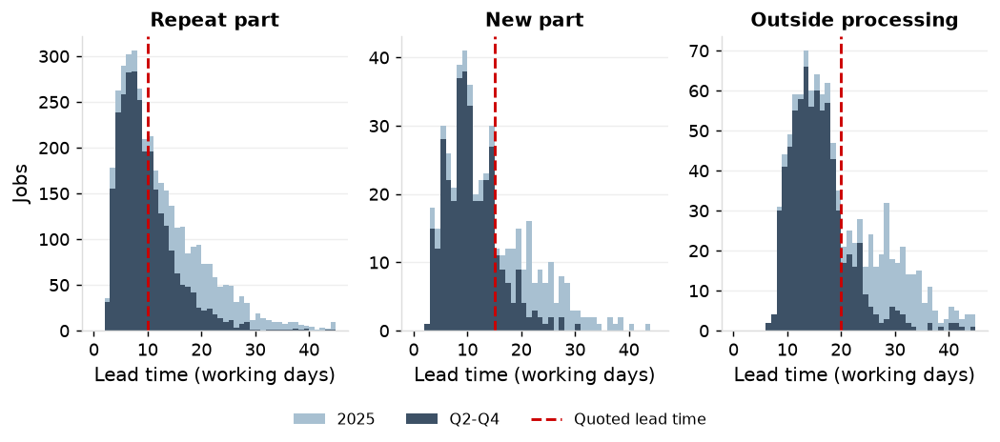
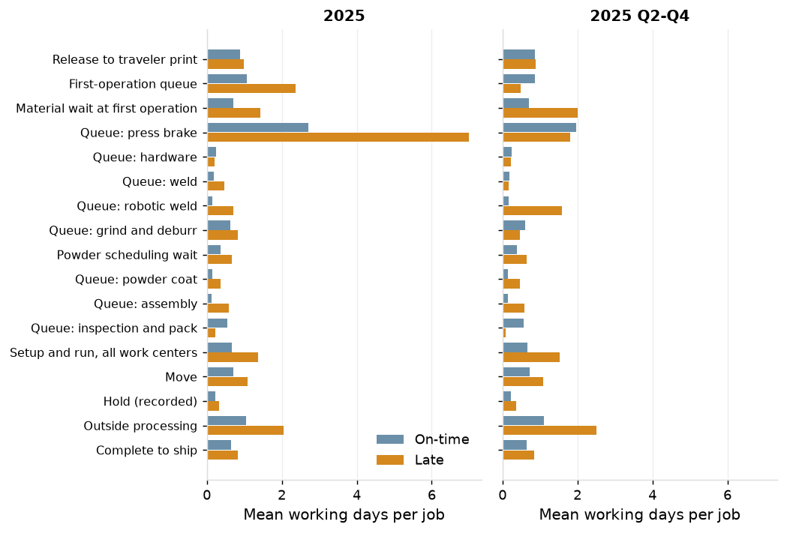
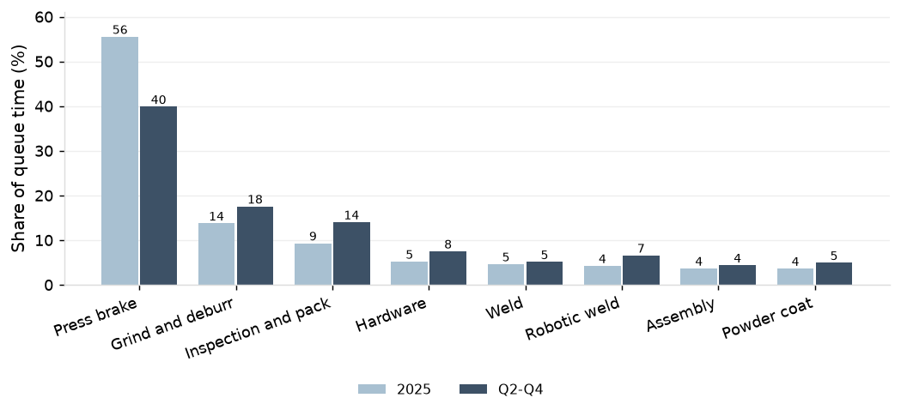
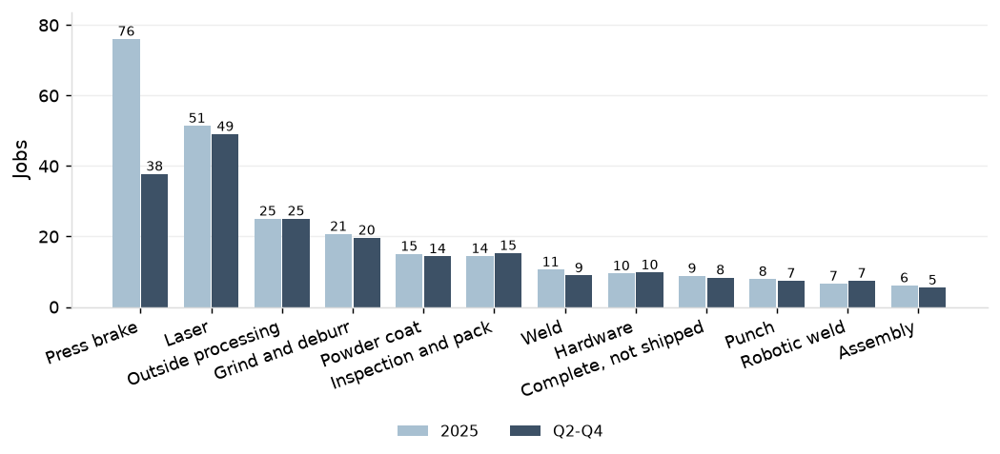
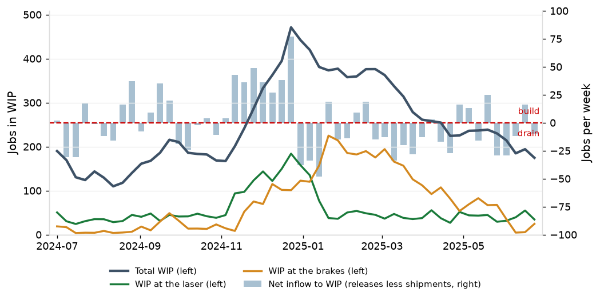
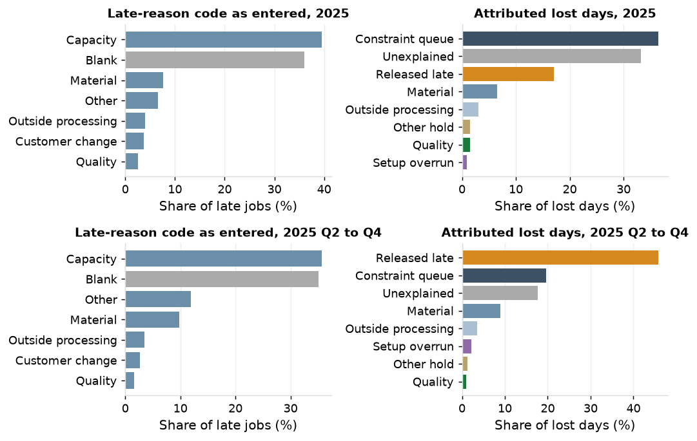
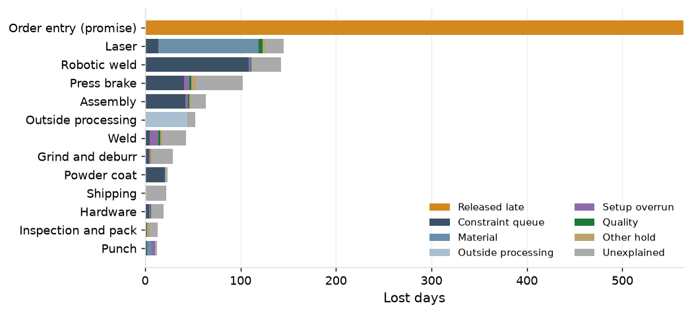
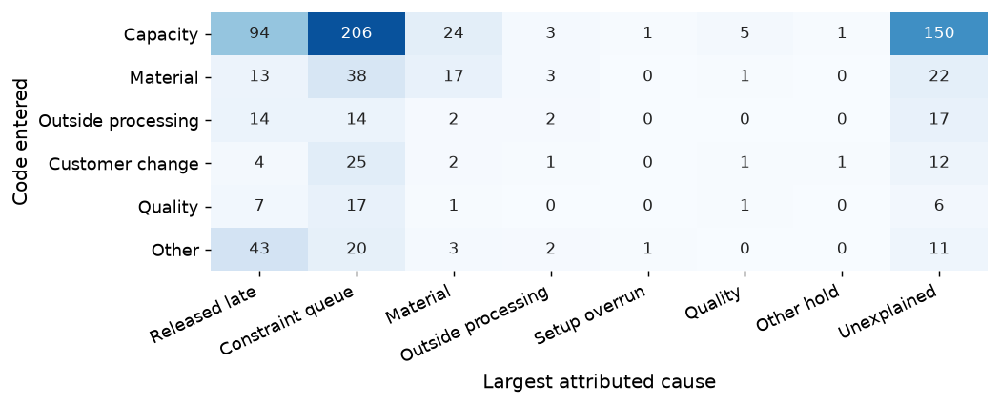

1. Lead time against the quote
Throughout the report below, data for full-year 2025 is compared to data in Q2-Q4 2025 because the 2024 year-end build put 847 of the year's 1,226 late jobs into the first quarter. See Appendix Table 5a for additional detail.
In 2025 the median job shipped in 11.2 working days against an average quoted lead time of 12.4; 9.2 in Q2-Q4. The quoted lead time was met on 58% of jobs for the year and 74% in Q2-Q4. The standard quoted lead times are 10 days for repeat parts (met on 55% of jobs in 2025 and 69% in Q2-Q4), 15 days for new parts (69% and 87%) and 20 days for outside processing (67% and 85%). See Appendix Table 1 for additional detail.
77% of jobs shipped by the promised date in 2025 and 90% in Q2-Q4, against the 95% target that the key accounts require. The 90th-percentile lead time is 25.2 days for 2025 and 18.2 in Q2-Q4. Late jobs have a median lead time of 21.2 days against 10.2 for on-time jobs.

2. Lead time decomposition
Throughout 2025 the brake queue was 28% of lead time and accounted for the largest share of the extra days on late jobs: 6.98 days against 2.71 for on-time jobs. This was due to the first quarter's backlog: the 2024 year-end build released more work than the brakes could absorb and put 847 of the year's 1,226 late jobs into Q1 (Section 3). In Q2-Q4, with the backlog cleared, late and on-time jobs waited a similar number of days at the brakes (1.81 and 1.96).
The extra days on late jobs in Q2-Q4 were instead due to material wait at the first operation (2.01 days for late jobs vs. 0.70 for on-time jobs), outside processing (2.51 vs. 1.10), the robotic weld queue (1.58 vs. 0.16) and setup and run (1.52 vs. 0.67; the average lot size for late jobs was 62 pieces vs. 47 for on-time jobs). Sections 4 to 9 provide more detail on these drivers. See Appendix Tables 2a and 2b for additional detail.

Across all work centers, the brakes accounted for 56% of queue time in 2025 and 40% in Q2-Q4. Grind and deburr follows at 14% in 2025 and 18% in Q2-Q4, and inspection and pack at 9% and 14%. The brake queue per operation has a median of 1.0 day in 2025 vs. 0.5 in Q2-Q4, and a 90th percentile of 11.3 days in 2025 vs. 4.8 in Q2-Q4. See Appendix Table 3 for additional detail.

3. Work in Process
In 2025 floor WIP was 253 jobs against the 245 the quoted lead times imply at measured throughput (ratio 1.03); in Q2-Q4 it was 209 against 250 (0.84). The excess for the year is the first-quarter backlog. In Q2-Q4 the floor carried 41 fewer jobs than its quoted lead times allow at the throughput it achieved, so it could have taken on about 20% more work, or quoted shorter lead times, and still shipped the average job inside its quote. See Appendix Table 5 for additional detail.
By location, queue and run together, the brakes hold 30% of WIP, the lasers 20% and outside processing 10%.

WIP was within 10% of its expected value (jobs shipped per day times the days each job spent in WIP) in 9 of 12 quarters, so in those quarters the floor was in balance. The three quarters that miss are the 2024 year-end build (2024 Q4), when WIP ran ahead of shipments, and the quarters in which a build shipped (2023 Q1 and 2025 Q2), when shipments ran ahead of WIP. See Appendix Table 6 for additional detail.
WIP peaked at 471 jobs at the end of 2024 against a Q3 2024 average of 153. In Q4 2024, the shop released 26% more brake standard hours than in Q3. Over six weeks in Q4 2024, this surge pushed the lasers to 92% of scheduled hours on average, vs. 69% in Q3. During the first three of those weeks, 94 to 123 jobs were waiting to be cut, vs. an average of 36 jobs in Q3. The work then queued at the brakes, which already run at 91% in a normal quarter, and the backlog was worked through in Q1 and into Q2 2025. See Appendix Table 7 for additional detail.

4. The shop's record
36% of late jobs carry no reason code. "Capacity" is 62% of entered codes for the year and 55% in Q2 to Q4, up from 46.5% in 2023. The entered code agrees with the largest attributed cause on 35.8% of coded late jobs against 31.3% expected by chance (31.3% against 26.1% in Q2 to Q4): the codes carry almost no information beyond their own frequencies. On the 390 coded jobs whose largest cause has a code of its own, agreement is 58.2% against 52.7% by chance.

5. Lost days by cause
For the year, constraint queue is 36% of the 4,647 lost days, unexplained 33%, released late 17%, material 6.5% and outside processing 3%; the year is the 2024 year-end build shipping in the first quarter.
In Q2 to Q4, released late is 46% of the 1,232 lost days and the largest cause on 191 of 379 late jobs; constraint queue is 20%, unexplained 18%, material 9% and outside processing 4%. In an ordinary quarter, close to half the days lost are on jobs promised inside the standard lead time before any work started.
| Cause | Lost days, 2025 | Share | Late jobs with the cause | Jobs where largest | Lost days, Q2 to Q4 | Share, Q2 to Q4 | Late jobs with the cause, Q2 to Q4 | Jobs where largest, Q2 to Q4 |
|---|---|---|---|---|---|---|---|---|
| Released late | 791 | 17.0% | 286 | 258 | 564 | 45.8% | 198 | 191 |
| Constraint queue | 1,693 | 36.4% | 789 | 504 | 241 | 19.6% | 145 | 81 |
| Material | 303 | 6.5% | 275 | 80 | 110 | 8.9% | 99 | 34 |
| Outside processing | 141 | 3.0% | 78 | 14 | 44 | 3.6% | 31 | 10 |
| Setup overrun | 41 | 0.9% | 40 | 3 | 27 | 2.2% | 7 | 3 |
| Quality | 67 | 1.4% | 93 | 9 | 11 | 0.9% | 24 | 3 |
| Other hold | 68 | 1.5% | 133 | 2 | 16 | 1.3% | 34 | 0 |
| Unexplained | 1,543 | 33.2% | 1,020 | 356 | 218 | 17.7% | 221 | 57 |
| Total | 4,647 | 100.0% | 1,226 | 1,226 | 1,232 | 100.0% | 379 | 379 |
6. Where the days are lost
In Q2 to Q4, order entry holds 46% of lost days (promises inside the standard lead time), the laser 12% (104 of its 145 days are material waits at the first cut), robotic weld 11.5% and the brakes 8%. For the year the brakes hold 25%, the laser 19% (the first-operation queue of November and December 2024) and order entry 17%.

7. Whose jobs
The top ten customers hold 54% of lost days for the year and all are key accounts. In Q2 to Q4 released late is the largest cause for 8 of the ten. Clearwater Signal Inc. and Lakeside Conveyor Co. hold 25% of lost days for the year and 21% in Q2 to Q4.
8. Where the codes and the data disagree
94 jobs coded "capacity" were released late and 150 coded "capacity" have no attributable cause as their largest. Of the 80 jobs coded "other", 43 were released late; of the 484 coded "capacity", 206 had constraint queue as their largest cause. Material was coded on 33 of the 275 late jobs with a material wait, and on 17 of the 80 where material is the largest cause.

9. The unexplained share
33% of lost days for the year and 18% in Q2 to Q4 match no rule. Of the 1,543 unexplained days for the year, 31% are brake queue above the on-time normal but below the threshold of the constraint rule, 18% are setup and run above normal with no overrun or rework recorded, and 11% are move. With the queue threshold at the 70th percentile the unexplained share is 25%; at the 90th, 46%. 76 of 1,226 late jobs (6.2%) have no cause assigned at all; 7 of 379 in Q2 to Q4.
Recommendation
Restate the fixed quote as a percentile of the measured lead-time distribution by routing class (Quoting and early warning from load): the 10-day repeat quote is met on 69% of jobs in an ordinary quarter. Plan the fourth-quarter peak with planned Saturday brake shifts from November through February and the setup program, sized on the shop model (Options tested: release rules, scheduling, shifts and equipment); the 2024 build put 847 jobs late in the first quarter of 2025. Ordinary-quarter lateness is taken up in Sections 4 to 9, where material, vendor and robotic weld causes are attributed job by job.
Replace the late-reason code on the shipment with a buffer status record kept by production control: each job's time buffer in thirds, and a reason captured when the job turns red, from this list: promise inside the standard lead time; queue at a named work center; material short at the first cut; outside processing late; quality; hold by reason; unexplained. Review the record weekly in place of the late-reason Pareto.
Require the rush flag and a named approver on every promise inside the standard lead time (Quoting and early warning from load sizes the quote). Extend the kit check to stock sheet items (Quoting and early warning from load measures kit completeness).
Target: 95% of jobs shipped by the promised date in every quarter, the first quarter included.
Target: A reason recorded on every late job at the moment it turns red.
| Action | Owner | When |
|---|---|---|
| Plan the fourth-quarter peak on the shop model: planned Saturday brake shifts and the setup program (Options tested: release rules, scheduling, shifts and equipment); a WIP cap and due-date dispatch lower on-time delivery (Options tested: release rules, scheduling, shifts and equipment) | Plant manager | April 2026 |
| Restate quoted lead times as a percentile of measured lead time by routing class and brake load (Quoting and early warning from load) | Estimating and customer service manager | May 2026 |
| Replace the late-reason code with a buffer status record: time buffer in thirds, reason captured when a job turns red, weekly review | Production control manager | March 2026 |
| Require the rush flag and a named approver on every promise inside the standard lead time (Quoting and early warning from load sizes the quote) | Customer service manager | February 2026 |
| Extend the kit check to stock sheet items (Quoting and early warning from load measures kit completeness) | Purchasing manager | March 2026 |
Follow-up: Weekly: WIP by location, brake queue per operation, and material wait at the first operation. Quoting and early warning from load evaluates these as leading measures of on-time delivery.
Method and data
Lead time decomposition
Coverage: 5,245 jobs shipped in 2025, 3,815 in Q2 to Q4. Durations are in working days; a scheduled Saturday counts as one. Lead time runs from the release date at 10:00 to the ship date at 15:00; days in WIP counts whole days from the release day to the day before shipment and is 0.21 days shorter on every job.
Stages: release to traveler print; first-operation queue (print to first cut, less material wait); material wait at the first operation (a recorded material hold, or a job-specific receipt after the print); queue (arrival at the work center to first start, operations after the first, less the powder scheduling wait to the next day of the color); setup and run (first start to last end of the operation); move (end of one operation to arrival at the next, less recorded holds, so holds not entered remain in it); holds (recorded holds only); outside processing (purchase order to receipt, with the wait before it); complete to ship.
Clock-offs closed automatically at shift end take the median hours of operator-closed transactions of the same work center and type. A new-part job is the first order against a new-part quote line within 60 days of the quote decision.
WIP is jobs released and not shipped, sampled every working day; throughput is jobs shipped per working day; the quarterly balance uses days in WIP of the jobs shipped in the quarter, including days before the quarter. Monthly, 17 of 36 periods are within 10%; rolling 13 weeks, 108 of 141.
Why jobs are late
Coverage: 1,226 late jobs and 4,647 lost days in 2025; 379 and 1,232 in Q2 to Q4. A job's lost days are its working days late. Lost days at a stage are the stage days above the median of on-time jobs of the same routing class shipped in the same quarter; the powder scheduling wait is not lost time.
Rules. Released late: the standard lead time of 10, 15 or 20 working days less the promised lead time, capped at days late, allocated first. Constraint queue: an operation with queue above its work center's 80th percentile for the quarter, or first-operation queue above its 80th percentile. Material: material wait at the first operation with a kit shortage or material hold recorded; a material hold at a later operation; or first-operation queue where the sheet issue came after planned start and followed a stock receipt of the same item, with the first work center's queue that week below its median. Outside processing: a line received after its promised date. Setup overrun: setup above standard by more than 2 hours and by more than twice standard. Quality: a recorded quality hold, or setup and run above normal on a job with a rework operation. Other hold: a recorded engineering, customer or tooling hold. Not attributable: the rest.
The days late remaining after released late are split across the stages' lost days in proportion; days at stages with no matching rule are unexplained.
Agreement compares the entered code with the cause holding the most lost days on the job: constraint queue and setup overrun count as capacity; material, outside processing and quality as their own codes; released late, other hold and unexplained as other. The chance level is the agreement expected if codes were assigned at the shop's code frequencies independently of the cause.
Appendix
Table 1. Lead time against the quoted lead time by routing class
| Period | Routing class | Jobs | Quoted | Median | Mean | 90th percentile | Within quoted | On time | Late jobs | Median, on time | Median, late |
|---|---|---|---|---|---|---|---|---|---|---|---|
| 2025 | All | 5,245 | 12.4 | 11.2 | 13.5 | 25.2 | 58.3% | 76.6% | 1,226 | 10.2 | 21.2 |
| 2025 | Repeat part | 3,767 | 10.0 | 10.2 | 12.0 | 23.2 | 54.7% | 78.7% | 803 | 8.2 | 18.2 |
| 2025 | New part | 481 | 15.0 | 11.2 | 13.4 | 25.2 | 69.4% | 78.8% | 102 | 10.2 | 22.2 |
| 2025 | Outside processing | 997 | 20.0 | 16.2 | 18.9 | 31.2 | 66.8% | 67.8% | 321 | 14.2 | 28.2 |
| 2025 Q2 to Q4 | All | 3,815 | 12.4 | 9.2 | 10.7 | 18.2 | 73.8% | 90.1% | 379 | 9.2 | 14.2 |
| 2025 Q2 to Q4 | Repeat part | 2,738 | 10.0 | 8.2 | 9.4 | 16.2 | 69.1% | 91.3% | 239 | 8.2 | 11.2 |
| 2025 Q2 to Q4 | New part | 349 | 15.0 | 10.2 | 10.6 | 17.2 | 86.8% | 92.0% | 28 | 9.2 | 16.2 |
| 2025 Q2 to Q4 | Outside processing | 728 | 20.0 | 15.2 | 15.7 | 22.5 | 85.2% | 84.6% | 112 | 14.2 | 22.2 |
Table 2a. Lead time by stage, 2025: mean working days per job, stages in routing order
| Stage | All jobs | Share of lead time | On time | Late |
|---|---|---|---|---|
| Release to traveler print | 0.91 | 6.7% | 0.88 | 0.99 |
| First-operation queue | 1.36 | 10.1% | 1.06 | 2.36 |
| Material wait at first operation | 0.88 | 6.5% | 0.71 | 1.44 |
| Queue: press brake | 3.71 | 27.5% | 2.71 | 6.98 |
| Queue: hardware | 0.24 | 1.8% | 0.25 | 0.21 |
| Queue: weld | 0.25 | 1.9% | 0.19 | 0.46 |
| Queue: robotic weld | 0.28 | 2.1% | 0.15 | 0.71 |
| Queue: grind and deburr | 0.67 | 5.0% | 0.62 | 0.83 |
| Powder scheduling wait | 0.44 | 3.3% | 0.37 | 0.67 |
| Queue: powder coat | 0.20 | 1.5% | 0.14 | 0.38 |
| Queue: assembly | 0.24 | 1.8% | 0.13 | 0.58 |
| Queue: inspection and pack | 0.48 | 3.5% | 0.55 | 0.22 |
| Setup and run | 0.82 | 6.1% | 0.66 | 1.36 |
| Move | 0.80 | 6.0% | 0.72 | 1.08 |
| Hold: customer | 0.08 | 0.6% | 0.07 | 0.13 |
| Hold: engineering | 0.07 | 0.5% | 0.06 | 0.07 |
| Hold: material | 0.00 | 0.0% | 0.00 | 0.01 |
| Hold: other | 0.03 | 0.2% | 0.03 | 0.03 |
| Hold: quality | 0.04 | 0.3% | 0.04 | 0.05 |
| Hold: tooling | 0.03 | 0.2% | 0.02 | 0.04 |
| Outside processing | 1.28 | 9.5% | 1.05 | 2.04 |
| Complete to ship | 0.68 | 5.1% | 0.64 | 0.82 |
| Lead time, mean | 13.46 | 11.03 | 21.44 | |
| Lead time, median | 11.2 | 10.2 | 21.2 | |
| Jobs | 5,245 | 4,019 | 1,226 |
Table 2b. Lead time by stage, 2025 Q2 to Q4: mean working days per job, stages in routing order
| Stage | All jobs | Share of lead time | On time | Late |
|---|---|---|---|---|
| Release to traveler print | 0.86 | 8.0% | 0.86 | 0.88 |
| First-operation queue | 0.83 | 7.8% | 0.87 | 0.48 |
| Material wait at first operation | 0.83 | 7.7% | 0.70 | 2.01 |
| Queue: press brake | 1.95 | 18.2% | 1.96 | 1.81 |
| Queue: hardware | 0.25 | 2.3% | 0.25 | 0.22 |
| Queue: weld | 0.19 | 1.7% | 0.19 | 0.17 |
| Queue: robotic weld | 0.30 | 2.8% | 0.16 | 1.58 |
| Queue: grind and deburr | 0.59 | 5.5% | 0.61 | 0.46 |
| Powder scheduling wait | 0.41 | 3.8% | 0.38 | 0.65 |
| Queue: powder coat | 0.18 | 1.7% | 0.15 | 0.46 |
| Queue: assembly | 0.19 | 1.8% | 0.15 | 0.59 |
| Queue: inspection and pack | 0.52 | 4.8% | 0.56 | 0.09 |
| Setup and run | 0.75 | 7.0% | 0.67 | 1.52 |
| Move | 0.76 | 7.1% | 0.72 | 1.09 |
| Hold: customer | 0.08 | 0.7% | 0.07 | 0.17 |
| Hold: engineering | 0.06 | 0.6% | 0.06 | 0.06 |
| Hold: material | 0.00 | 0.0% | 0.00 | 0.01 |
| Hold: other | 0.03 | 0.2% | 0.03 | 0.03 |
| Hold: quality | 0.04 | 0.4% | 0.04 | 0.04 |
| Hold: tooling | 0.03 | 0.2% | 0.02 | 0.05 |
| Outside processing | 1.24 | 11.6% | 1.10 | 2.51 |
| Complete to ship | 0.66 | 6.2% | 0.64 | 0.85 |
| Lead time, mean | 10.71 | 10.16 | 15.69 | |
| Lead time, median | 9.2 | 9.2 | 14.2 | |
| Jobs | 3,815 | 3,436 | 379 |
Table 3. Queue time by work center
| Work center | Operations | Queue days | Share | Mean | Median | 90th percentile | Share, Q2 to Q4 | Mean, Q2 to Q4 | Median, Q2 to Q4 | 90th percentile, Q2 to Q4 |
|---|---|---|---|---|---|---|---|---|---|---|
| Press brake | 5,692 | 20,171 | 55.5% | 3.54 | 1.02 | 11.30 | 39.9% | 1.77 | 0.54 | 4.83 |
| Grind and deburr | 5,680 | 5,002 | 13.8% | 0.88 | 0.79 | 1.87 | 17.6% | 0.79 | 0.79 | 1.15 |
| Inspection and pack | 5,241 | 3,383 | 9.3% | 0.65 | 0.76 | 1.04 | 14.0% | 0.68 | 0.81 | 1.03 |
| Hardware | 2,167 | 1,891 | 5.2% | 0.87 | 0.72 | 1.78 | 7.5% | 0.87 | 0.74 | 1.71 |
| Weld | 1,568 | 1,684 | 4.6% | 1.07 | 0.75 | 2.21 | 5.1% | 0.83 | 0.74 | 1.68 |
| Robotic weld | 423 | 1,540 | 4.2% | 3.64 | 1.67 | 9.98 | 6.6% | 3.93 | 1.74 | 11.01 |
| Assembly | 695 | 1,330 | 3.7% | 1.91 | 0.90 | 5.64 | 4.4% | 1.58 | 0.88 | 3.86 |
| Powder coat | 2,367 | 1,318 | 3.6% | 0.56 | 0.10 | 2.30 | 4.9% | 0.53 | 0.10 | 2.18 |
Table 5. Floor WIP against the WIP the quoted lead times imply
| Period | Working days | Jobs shipped | Mean WIP | Jobs shipped per day | Mean quoted lead time | WIP at quoted lead times | Ratio | WIP over throughput (days) | Mean days in WIP | Mean lead time |
|---|---|---|---|---|---|---|---|---|---|---|
| 2025 | 265 | 5,245 | 253 | 19.79 | 12.36 | 245 | 1.03 | 12.77 | 13.25 | 13.46 |
| 2025 Q2 to Q4 | 189 | 3,815 | 209 | 20.19 | 12.37 | 250 | 0.84 | 10.35 | 10.50 | 10.71 |
Table 5a. On-time delivery and lead time by quarter shipped
| Quarter shipped | Jobs shipped | Late jobs | On time | Median lead time | 90th percentile |
|---|---|---|---|---|---|
| 2023 Q1 | 1,192 | 83 | 93.0% | 9.2 | 21.2 |
| 2023 Q2 | 1,034 | 47 | 95.5% | 7.2 | 13.2 |
| 2023 Q3 | 979 | 76 | 92.2% | 7.2 | 14.2 |
| 2023 Q4 | 1,140 | 90 | 92.1% | 8.2 | 16.2 |
| 2024 Q1 | 1,199 | 78 | 93.5% | 8.2 | 17.2 |
| 2024 Q2 | 1,112 | 59 | 94.7% | 7.2 | 14.2 |
| 2024 Q3 | 1,056 | 105 | 90.1% | 8.2 | 15.2 |
| 2024 Q4 | 1,174 | 144 | 87.7% | 10.2 | 17.2 |
| 2025 Q1 | 1,430 | 847 | 40.8% | 20.2 | 33.2 |
| 2025 Q2 | 1,363 | 146 | 89.3% | 11.2 | 21.2 |
| 2025 Q3 | 1,192 | 125 | 89.5% | 8.2 | 16.2 |
| 2025 Q4 | 1,260 | 108 | 91.4% | 9.2 | 17.2 |
Table 6. WIP, throughput and days in WIP by calendar quarter
| Quarter | Working days | Jobs shipped | Jobs shipped per day | Days in WIP | Mean WIP | WIP over (throughput x days in WIP) | Within 10% |
|---|---|---|---|---|---|---|---|
| 2023 Q1 | 65 | 1,192 | 18.3 | 11.0 | 151 | 0.75 | no |
| 2023 Q2 | 65 | 1,034 | 15.9 | 7.6 | 124 | 1.03 | yes |
| 2023 Q3 | 65 | 979 | 15.1 | 8.0 | 122 | 1.02 | yes |
| 2023 Q4 | 58 | 1,140 | 19.7 | 9.2 | 187 | 1.03 | yes |
| 2024 Q1 | 68 | 1,199 | 17.6 | 9.6 | 164 | 0.96 | yes |
| 2024 Q2 | 64 | 1,112 | 17.4 | 7.9 | 142 | 1.03 | yes |
| 2024 Q3 | 64 | 1,056 | 16.5 | 8.9 | 153 | 1.05 | yes |
| 2024 Q4 | 62 | 1,174 | 18.9 | 10.3 | 253 | 1.30 | no |
| 2025 Q1 | 76 | 1,430 | 18.8 | 20.6 | 362 | 0.93 | yes |
| 2025 Q2 | 65 | 1,363 | 21.0 | 12.3 | 225 | 0.87 | no |
| 2025 Q3 | 64 | 1,192 | 18.6 | 9.3 | 180 | 1.04 | yes |
| 2025 Q4 | 60 | 1,260 | 21.0 | 9.7 | 222 | 1.09 | yes |
Table 7. Year-end WIP build by year
| Year | Third-quarter mean WIP | December peak WIP | Peak date | Peak over third-quarter mean | On time, following first quarter | Median lead time, following first quarter |
|---|---|---|---|---|---|---|
| 2023 | 122 | 252 | Dec 22 | 2.1 | 93.5% | 8.2 |
| 2024 | 153 | 471 | Dec 23 | 3.1 | 40.8% | 20.2 |
| 2025 | 180 | 383 | Dec 23 | 2.1 |
Table 9. Late-reason codes by period shipped
| Period shipped | Late jobs | Blank | Capacity share of entered codes |
|---|---|---|---|
| 2023 | 296 | 36.8% | 46.5% |
| 2024 | 386 | 34.2% | 60.2% |
| 2025 | 1,226 | 36.0% | 61.7% |
| 2025 Q2 to Q4 | 379 | 35.1% | 54.9% |
Table 10. Agreement of the entered code with the largest attributed cause
| Comparison | Period | Late jobs | Code agrees with largest attributed cause | Chance level | Over chance |
|---|---|---|---|---|---|
| All coded late jobs | 2025 | 785 | 35.8% | 31.3% | +4.5 points |
| All coded late jobs | 2025 Q2 to Q4 | 246 | 31.3% | 26.1% | +5.2 points |
| Jobs whose largest cause has a code | 2025 | 390 | 58.2% | 52.7% | +5.5 points |
| Jobs whose largest cause has a code | 2025 Q2 to Q4 | 89 | 47.2% | 38.0% | +9.2 points |
Table 11. Entered code against largest attributed cause, 2025
| Code entered | Released late | Constraint queue | Material | Outside processing | Setup overrun | Quality | Other hold | Unexplained |
|---|---|---|---|---|---|---|---|---|
| Capacity | 94 | 206 | 24 | 3 | 1 | 5 | 1 | 150 |
| Material | 13 | 38 | 17 | 3 | 0 | 1 | 0 | 22 |
| Outside processing | 14 | 14 | 2 | 2 | 0 | 0 | 0 | 17 |
| Customer change | 4 | 25 | 2 | 1 | 0 | 1 | 1 | 12 |
| Quality | 7 | 17 | 1 | 0 | 0 | 1 | 0 | 6 |
| Other | 43 | 20 | 3 | 2 | 1 | 0 | 0 | 11 |
Table 12. Lost days by work center and cause, 2025
| Work center | Lost days | Share | Released late | Constraint queue | Material | Outside processing | Setup overrun | Quality | Other hold | Unexplained |
|---|---|---|---|---|---|---|---|---|---|---|
| Press brake | 1,152 | 24.8% | 0 | 558 | 1 | 0 | 11 | 12 | 13 | 557 |
| Laser | 867 | 18.7% | 0 | 401 | 255 | 0 | 1 | 14 | 13 | 182 |
| Order entry (promise) | 791 | 17.0% | 791 | 0 | 0 | 0 | 0 | 0 | 0 | 0 |
| Assembly | 306 | 6.6% | 0 | 161 | 0 | 0 | 5 | 5 | 3 | 132 |
| Grind and deburr | 276 | 5.9% | 0 | 105 | 0 | 0 | 2 | 2 | 9 | 158 |
| Robotic weld | 266 | 5.7% | 0 | 183 | 0 | 0 | 2 | 3 | 1 | 76 |
| Weld | 253 | 5.4% | 0 | 99 | 0 | 0 | 12 | 19 | 2 | 121 |
| Outside processing | 170 | 3.7% | 0 | 0 | 0 | 141 | 0 | 0 | 3 | 26 |
| Powder coat | 128 | 2.8% | 0 | 104 | 0 | 0 | 1 | 1 | 6 | 18 |
| Punch | 124 | 2.7% | 0 | 39 | 46 | 0 | 3 | 0 | 3 | 33 |
| Shipping | 120 | 2.6% | 0 | 0 | 0 | 0 | 0 | 0 | 0 | 120 |
| Hardware | 105 | 2.3% | 0 | 23 | 0 | 0 | 2 | 6 | 3 | 70 |
| Inspection and pack | 88 | 1.9% | 0 | 21 | 1 | 0 | 1 | 5 | 12 | 49 |
| No stage above normal | 2 | 0.0% | 0 | 0 | 0 | 0 | 0 | 0 | 0 | 2 |
Table 13. Lost days by work center and cause, 2025 Q2 to Q4
| Work center | Lost days | Share | Released late | Constraint queue | Material | Outside processing | Setup overrun | Quality | Other hold | Unexplained |
|---|---|---|---|---|---|---|---|---|---|---|
| Order entry (promise) | 564 | 45.8% | 564 | 0 | 0 | 0 | 0 | 0 | 0 | 0 |
| Laser | 145 | 11.8% | 0 | 14 | 104 | 0 | 1 | 4 | 3 | 19 |
| Robotic weld | 142 | 11.5% | 0 | 109 | 0 | 0 | 2 | 1 | 0 | 31 |
| Press brake | 102 | 8.3% | 0 | 41 | 0 | 0 | 6 | 2 | 5 | 49 |
| Assembly | 63 | 5.1% | 0 | 43 | 0 | 0 | 3 | 1 | 1 | 16 |
| Outside processing | 52 | 4.3% | 0 | 0 | 0 | 44 | 0 | 0 | 0 | 8 |
| Weld | 43 | 3.5% | 0 | 5 | 0 | 0 | 9 | 2 | 2 | 25 |
| Grind and deburr | 29 | 2.4% | 0 | 4 | 0 | 0 | 1 | 0 | 1 | 22 |
| Powder coat | 24 | 1.9% | 0 | 21 | 0 | 0 | 0 | 0 | 0 | 2 |
| Shipping | 22 | 1.8% | 0 | 0 | 0 | 0 | 0 | 0 | 0 | 22 |
| Hardware | 19 | 1.6% | 0 | 4 | 0 | 0 | 1 | 1 | 0 | 13 |
| Inspection and pack | 13 | 1.1% | 0 | 0 | 0 | 0 | 1 | 1 | 3 | 8 |
| Punch | 13 | 1.0% | 0 | 2 | 5 | 0 | 3 | 0 | 1 | 2 |
Table 14. Lost days by customer, top ten, 2025
| Customer | Key account | Jobs shipped | Late jobs | On time | Lost days | Share of lost days | Cumulative share | Largest cause |
|---|---|---|---|---|---|---|---|---|
| Clearwater Signal Inc. | yes | 706 | 171 | 75.8% | 665 | 14.3% | 14.3% | Constraint queue |
| Lakeside Conveyor Co. | yes | 754 | 160 | 78.8% | 497 | 10.7% | 25.0% | Unexplained |
| Horizon Trailer Co. | yes | 391 | 80 | 79.5% | 247 | 5.3% | 30.3% | Constraint queue |
| Sterling Health Systems Inc. | yes | 170 | 49 | 71.2% | 199 | 4.3% | 34.6% | Constraint queue |
| Cedar Controls LLC | yes | 177 | 53 | 70.1% | 191 | 4.1% | 38.7% | Constraint queue |
| Harbor Medical Ltd. | yes | 173 | 44 | 74.6% | 175 | 3.8% | 42.5% | Constraint queue |
| Westbrook Networks Co. | yes | 167 | 43 | 74.3% | 174 | 3.7% | 46.2% | Constraint queue |
| Heritage Vehicle Systems Inc. | yes | 139 | 40 | 71.2% | 143 | 3.1% | 49.3% | Unexplained |
| Sterling Farm Systems Co. | yes | 121 | 18 | 85.1% | 111 | 2.4% | 51.7% | Constraint queue |
| Union Climate Products Corp. | yes | 74 | 20 | 73.0% | 97 | 2.1% | 53.8% | Constraint queue |
Table 15. Lost days by customer, top ten, 2025 Q2 to Q4
| Customer | Key account | Jobs shipped | Late jobs | On time | Lost days | Share of lost days | Cumulative share | Largest cause |
|---|---|---|---|---|---|---|---|---|
| Clearwater Signal Inc. | yes | 510 | 40 | 92.2% | 135 | 11.0% | 11.0% | Constraint queue |
| Lakeside Conveyor Co. | yes | 539 | 40 | 92.6% | 129 | 10.5% | 21.4% | Released late |
| Heritage Vehicle Systems Inc. | yes | 98 | 13 | 86.7% | 60 | 4.9% | 26.3% | Released late |
| Sterling Health Systems Inc. | yes | 126 | 19 | 84.9% | 57 | 4.6% | 30.9% | Released late |
| Harbor Medical Ltd. | yes | 130 | 15 | 88.5% | 54 | 4.4% | 35.3% | Released late |
| Cedar Controls LLC | yes | 128 | 19 | 85.2% | 50 | 4.1% | 39.4% | Released late |
| Horizon Trailer Co. | yes | 274 | 20 | 92.7% | 46 | 3.7% | 43.1% | Released late |
| Highland Electrical Products Inc. | yes | 59 | 11 | 81.4% | 35 | 2.8% | 45.9% | Released late |
| Riverside Climate Products Inc. | no | 31 | 6 | 80.6% | 28 | 2.3% | 48.2% | Constraint queue |
| Pinnacle Transit Products Ltd. | yes | 49 | 7 | 85.7% | 26 | 2.1% | 50.3% | Released late |
Table 16. Stage composition of the unexplained lost days
| Stage | Unexplained days, 2025 | Share | Unexplained days, Q2 to Q4 | Share, Q2 to Q4 |
|---|---|---|---|---|
| Queue: press brake | 479 | 31.0% | 34 | 15.8% |
| Setup and run | 278 | 18.0% | 64 | 29.5% |
| Move | 177 | 11.5% | 29 | 13.2% |
| Complete to ship | 120 | 7.8% | 22 | 10.3% |
| Queue: assembly | 83 | 5.4% | 3 | 1.5% |
| First-operation queue | 75 | 4.9% | 6 | 2.8% |
| Queue: grind and deburr | 68 | 4.4% | 5 | 2.4% |
| Material wait at first operation | 57 | 3.7% | 6 | 2.9% |
| Queue: robotic weld | 52 | 3.3% | 24 | 11.1% |
| Release to traveler print | 47 | 3.1% | 2 | 1.0% |
| Queue: weld | 37 | 2.4% | 4 | 1.9% |
| Queue: hardware | 32 | 2.1% | 8 | 3.5% |
| Outside processing | 26 | 1.7% | 8 | 3.8% |
| Hold: other | 5 | 0.3% | 1 | 0.4% |
| Queue: inspection and pack | 3 | 0.2% | 0 | 0.0% |
| Queue: powder coat | 3 | 0.2% | 0 | 0.0% |
| No stage above normal | 2 | 0.1% | 0 | 0.0% |
| Total | 1,543 | 100.0% | 218 | 100.0% |
Table 17. Constraint queue and unexplained shares by queue threshold
| Queue threshold of the constraint rule | Constraint queue, 2025 | Unexplained, 2025 | Constraint queue, Q2 to Q4 | Unexplained, Q2 to Q4 |
|---|---|---|---|---|
| 70th percentile | 44.3% | 25.4% | 22.8% | 14.5% |
| 80th percentile (the rule) | 36.4% | 33.2% | 19.6% | 17.7% |
| 90th percentile | 23.2% | 46.4% | 13.5% | 23.8% |